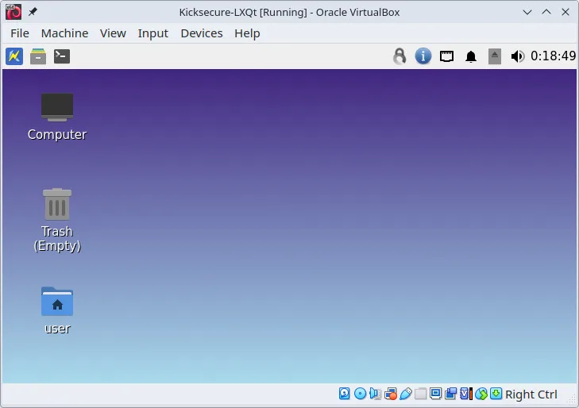
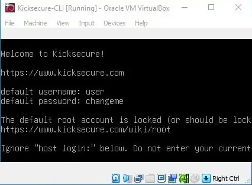

We believe security software like Kicksecure needs to remain Open Source and independent. Would you help sustain and grow the project? Learn more about our 14 year success story and maybe DONATE!
Kicksecure Linux Installer for VirtualBox
Please follow these steps to install Kicksecure.

Kicksecure can be easily installed using Kicksecure Linux Installer. Select your Linux distribution to get started.
 This page is fully functional without JavaScript, but enabling
JavaScript significantly enhances the user experience.
This page is fully functional without JavaScript, but enabling
JavaScript significantly enhances the user experience.
Debian, Fedora and Derivatives

GUI
- Kicksecure with LXQt graphical user interface (GUI).
- This version of Kicksecure is designed to run inside VirtualBox.
- Beginner-friendly and easy to use.
- It is the right choice for most users.
1 Kicksecure Linux Installer
TLS
1 Download.
curl --tlsv1.3 --output kicksecure-lxqt-installer-cli --url https://www.kicksecure.com/dist-installer-cli
Optional: Digital signature verification.
- Digital signatures are a tool enhancing download security. They are commonly used across the internet and nothing special to worry about.
- Optional, not required: Digital signatures are optional and not mandatory for using Kicksecure, but an extra security measure for advanced users. If you've never used them before, it might be overwhelming to look into them at this stage. Just ignore them for now.
- Learn more: Curious? If you are interested in becoming more familiar with advanced computer security concepts, you can learn more about digital signatures here: Verifying Software Signatures
Choose either Option A, Option B or Option C.
Option A) Install the installer from the Kicksecure APT repository
By installing from the Kicksecure APT repository, no additional verification of the installer is required because APT automatically does that.
1 Add the Kicksecure APT repository.
See Kicksecure Packages for Debian Hosts.
2
Install package usability-misc.
Because it contains the Kicksecure Linux Installer.
Install package(s) usability-misc following these
instructions:
1 Platform specific notice.
- Kicksecure: No special notice.
- Kicksecure-Qubes: In Template.
2 Update the package lists and upgrade the system.
sudo apt update && sudo apt full-upgrade
3
Install the usability-misc package(s).
Using apt command line --no-install-recommends option is in
most cases optional.
sudo apt install --no-install-recommends usability-misc
4 Platform specific notice.
- Kicksecure: No special notice.
- Kicksecure-Qubes: Shut down Template and restart App Qubes based on it as per Qubes Template Modification.
5 Done.
The procedure of installing package(s) usability-misc is
complete.
3 Run the Kicksecure Linux Installer.
kicksecure-lxqt-installer-cli
4 Done.
Option B) Verify the Installer
The Linux Installer is signed by Kicksecure developer Patrick Schleizer using OpenPGP and signify.
Do you already know how to perform digital software verification using an OpenPGP and/or signify key?
- Yes: Acquire the Signing Key and the signatures straight away and proceed.
- No: Consider the following instructions: Undocumented. Unspecific to Kicksecure.
- Installer
- OpenPGP signature
- Signify signature
signify:
signify-openbsd -Vp keyname.pub -m dist-installer-cli
Option C) Manual Installation without the Installer
1 There is no need to use the Kicksecure Linux Installer.
The user is not forced to use the Kicksecure Linux Installer.
2 Manually install Kicksecure for VirtualBox.
Use the manual Kicksecure for VirtualBox instructions instead of the Kicksecure Linux Installer.
3 Done.
2 Run the installer.
bash ./kicksecure-lxqt-installer-cli

onion
1 System Tor setup.
Downloading via an onion service requires a functional system Tor. This aspect is not specific to Kicksecure and is undocumented.
2 Download.
torsocks curl --output kicksecure-lxqt-installer-cli --url http://www.w5j6stm77zs6652pgsij4awcjeel3eco7kvipheu6mtr623eyyehj4yd.onion/dist-installer-cli
3 Run the installer.
bash ./kicksecure-lxqt-installer-cli --onion
2 Start Kicksecure
Start VirtualBox →
Double-click Kicksecure-LXQt.
3 Done
The process of installing Kicksecure is complete.

CLI

- Kicksecure with command line interface (CLI).
- This version of Kicksecure is designed to run inside VirtualBox.
- Kicksecure with CLI is suited for advanced users -- those who want Kicksecure without a graphical user interface (GUI). Everyone else should install the user-friendly Kicksecure VirtualBox with GUI LXQt.
TLS
1 Download.
curl --tlsv1.3 --output kicksecure-cli-installer-cli --url https://www.kicksecure.com/dist-installer-cli
Optional: Digital signature verification.
- Digital signatures are a tool enhancing download security. They are commonly used across the internet and nothing special to worry about.
- Optional, not required: Digital signatures are optional and not mandatory for using Kicksecure, but an extra security measure for advanced users. If you've never used them before, it might be overwhelming to look into them at this stage. Just ignore them for now.
- Learn more: Curious? If you are interested in becoming more familiar with advanced computer security concepts, you can learn more about digital signatures here: Verifying Software Signatures
Choose either Option A, Option B or Option C.
Option A) Install the installer from the Kicksecure APT repository
By installing from the Kicksecure APT repository, no additional verification of the installer is required because APT automatically does that.
1 Add the Kicksecure APT repository.
See Kicksecure Packages for Debian Hosts.
2
Install package usability-misc.
Because it contains the Kicksecure Linux Installer.
Install package(s) usability-misc following these
instructions:
1 Platform specific notice.
- Kicksecure: No special notice.
- Kicksecure-Qubes: In Template.
2 Update the package lists and upgrade the system.
sudo apt update && sudo apt full-upgrade
3
Install the usability-misc package(s).
Using apt command line --no-install-recommends option is in
most cases optional.
sudo apt install --no-install-recommends usability-misc
4 Platform specific notice.
- Kicksecure: No special notice.
- Kicksecure-Qubes: Shut down Template and restart App Qubes based on it as per Qubes Template Modification.
5 Done.
The procedure of installing package(s) usability-misc is
complete.
3 Run the Kicksecure Linux Installer.
kicksecure-cli-installer-cli
4 Done.
Option B) Verify the Installer
The Linux Installer is signed by Kicksecure developer Patrick Schleizer using OpenPGP and signify.
Do you already know how to perform digital software verification using an OpenPGP and/or signify key?
- Yes: Acquire the Signing Key and the signatures straight away and proceed.
- No: Consider the following instructions: Undocumented. Unspecific to Kicksecure.
- Installer
- OpenPGP signature
- Signify signature
signify:
signify-openbsd -Vp keyname.pub -m dist-installer-cli
Option C) Manual Installation without the Installer
1 There is no need to use the Kicksecure Linux Installer.
The user is not forced to use the Kicksecure Linux Installer.
2 Manually install Kicksecure for VirtualBox.
Use the manual Kicksecure for VirtualBox instructions instead of the Kicksecure Linux Installer.
3 Done.
2 Run the installer.
bash ./kicksecure-cli-installer-cli
onion
1 System Tor setup.
Downloading via an onion service requires a functional system Tor. This aspect is not specific to Kicksecure and is undocumented.
2 Download.
torsocks curl --output kicksecure-cli-installer-cli --url http://www.w5j6stm77zs6652pgsij4awcjeel3eco7kvipheu6mtr623eyyehj4yd.onion/dist-installer-cli
3 Run the installer.
bash ./kicksecure-cli-installer-cli --onion
Additional information about the Kicksecure Linux Installer.
Kicksecure Linux Installer
The Kicksecure Linux Installer streamlines the process of installing VirtualBox and setting up Kicksecure on VirtualBox.
While the earlier method required users to follow instructions on the Kicksecure for VirtualBox wiki page, which included the installation of VirtualBox, downloading, and importing of Kicksecure VirtualBox images, this installer makes the entire process more intuitive. Here's an in-depth look at what it does:
- Script name verification: The installer checks for valid
script names, such as
dist-installer-cli,virtualbox-installer-cli,kicksecure-cli-installer-cli,kicksecure-lxqt-installer-cli. - Command-line parsing: The installer parses any command-line options provided.
- System requirements check: The installer assesses if the system meets prerequisites like adequate disk space, RAM, and virtualization support. Users are informed if any of these criteria are not met.
- Package installation: Necessary packages for the script's
operation, like
signify,curl,rsync, andvboxmanage(for VirtualBox users) are installed using the distribution's package manager (APT or DNF). - Repository settings: Repository selection and configuration
depends on platform and distribution release.
- Debian and derivatives: Repository logic depends on the
Debian release in use.
bookworm(oldstable): Enables the Debianbackportsandfasttrackrepositories.trixie(stable): Enables thevirtualbox.org(Oracle) repository.[1]sid(unstable): Installs from Debianunstablerepository.
- Ubuntu: Installs from the Ubuntu repository. [2]
- Fedora and derivatives: Enables the
virtualbox.org(Oracle) repository. - Updates: The preferred repository for VirtualBox installation
may vary in the future based on availability. Updated installers might
fetch VirtualBox from the Debian
fasttrackrepository,virtualbox.org(Oracle) repository, or the Kicksecure repository. Development discussion: VirtualBox Integration and Upgrades
- Debian and derivatives: Repository logic depends on the
Debian release in use.
- Version querying: If no version is specified via command
line, the Kicksecure version number is fetched using the API. (Only if installing Kicksecure.) (Not for
virtualbox-installer-cli. [3]) - VirtualBox configuration: System configuration is automatically added to prevent VirtualBox from conflicting with KVM, without breaking functionality for either VirtualBox or KVM.
- Virtual machine handling: VM-related steps depend on whether
VMs are already present and on installer mode.
- Previously imported VMs: Users are prompted to boot the
virtual system(s). (Not for
virtualbox-installer-cli. [3].) - Previously downloaded VM files: Authenticity and integrity
checks are run. (Not for
virtualbox-installer-cli. [3].) - First-time users: The installer downloads the required files,
conducts authenticity and integrity checks, imports the system(s), and
then attempts to start the Virtual Machine(s). (Not for
virtualbox-installer-cli. [3].)
- Previously imported VMs: Users are prompted to boot the
virtual system(s). (Not for
- Running VM detection: Inform user if VMs are already running
and abort installation. (Not for
virtualbox-installer-cli. [3].)
Additional Features:
- Download resumption: Utilizes
rsyncinternally to enable download resumption capabilities. - Oracle repository downloads: When using
--oracle-repocommand line option, downloads VirtualBox from Oracle repository. This is the default for Fedora-based distributions. It is optional for Debian-based ones (including Ubuntu) but may be set by developers in the future if the Debian repository discontinues the VirtualBox package. The Oracle repository might at times provide a newer VirtualBox version. - Digital signature verification: Uses APT (which verifies
digital software signatures). When using the
--oracle-repo, installs Oracle's repository and signing key. - Integrity checking: Offers a streamlined integrity
verification process, facilitated by
rsync. - Onion support: Allows for downloads from onion sources with
the
--onioncommand line option whenever possible. (For example, Oracle does not provide an onion repository.) - Default download directory: Files are saved in the
~/dist-installer-cli-downloadfolder. - Logging mechanics: For transparency, every command executed is logged in the download directory, accompanied by the specific script version used at the time.
- Transparent system modifications: The installer's operations are evident to the user. All persistent system alterations, especially those executed with administrative ("root") privileges, are prominently detailed in the installer's output.
- Documentation: Comprehensive details can be found in the
 Kicksecure/usability-misc.
Kicksecure/usability-misc. - Checks: Nested Virtualization, secure boot enabled check.
Developer Information:
- Source code:
Kicksecure/usability-misc,
Kicksecure/usability-misc
- Development wiki page: Dev/Linux Installer
- Development discussion: forums discussion
- Security: The
dist-installer-cliscript is not intended for curl bash piping. However, for a comprehensive discussion on security concerns related to this topic, see here.
Questions and Answers
Question |
Answer |
|---|---|
Do I have to use the new Kicksecure Linux Installer? |
No. You can still manually install VirtualBox and import Kicksecure by following the instructions on the Kicksecure for VirtualBox wiki page. |
Is the manual method for VirtualBox installation going to be deprecated? |
There's no such plan as of now. The manual method remains crucial as it offers compatibility with certain Linux distributions not supported by the Kicksecure Linux Installer. |
Can I use Kicksecure CLI in conjunction with Kicksecure LXQt? |
|
Why should I prefer VirtualBox over KVM? |
For insights, visit Here. |
Why choose VirtualBox instead of Qubes? |
The reasons are elaborated here. |
Where can I find the main FAQ? |
Check out the Kicksecure FAQ. |
Footnotes
- This is because Debian Trixie's
fasttrackrepository does not have VirtualBox yet, and Debian Sid's build of VirtualBox is not compatible with Trixie any longer. - Might sound complicated but it is actually quite simple in case of
Ubuntu. Install from the usual, "normal", official
packages.ubuntu.com. From the usualsuite. For example, if using suitejammy, it installs fromjammy. This is because Ubuntu is packaging VirtualBox for their usual stable suites. Debian does not. That is why Ubuntu does not require any special repository. (Debian requiredbackportsandfasttrackrepositories at time of writing.) - Because that is not required if only installing VirtualBox using
virtualbox-installer-cli.)
Kicksecure
- For users already using Kicksecure as their host operating system, installation of Kicksecure for VirtualBox is even simpler.
- No need to manually download or verify the Kicksecure Linux Installer on Kicksecure hosts.
- Kicksecure Linux Installer for VirtualBox is installed by default in Kicksecure.
Simply run one of the following commands.
For Kicksecure with LXQt (recommended):
- kicksecure-lxqt-installer-cli
- kicksecure-lxqt-installer-cli --onion
For Kicksecure with CLI (for advanced users only):
- kicksecure-cli-installer-cli
- kicksecure-cli-installer-cli --onion
- Follow the same instructions as for tab 'Debian, Fedora and Derivatives'.
Ubuntu
- Minimum required version: Only Ubuntu Jammy (22.04) (LTS) has been tested.
- Lower versions will not work. Please release upgrade your Ubuntu version first.
- Higher stable Ubuntu versions will probably work.
- See tab 'Debian, Fedora and Derivatives'.
Other Linux Distributions
- The Kicksecure Linux Installer for VirtualBox is only supported for Debian, Fedora and their derivatives (such as Ubuntu, CentOS, RedHat, or Kicksecure).
- See to learn more and get started with Kicksecure.
- Are you a developer? If your host operating system is unsupported, contributions to add support for other Linux distributions are welcome.